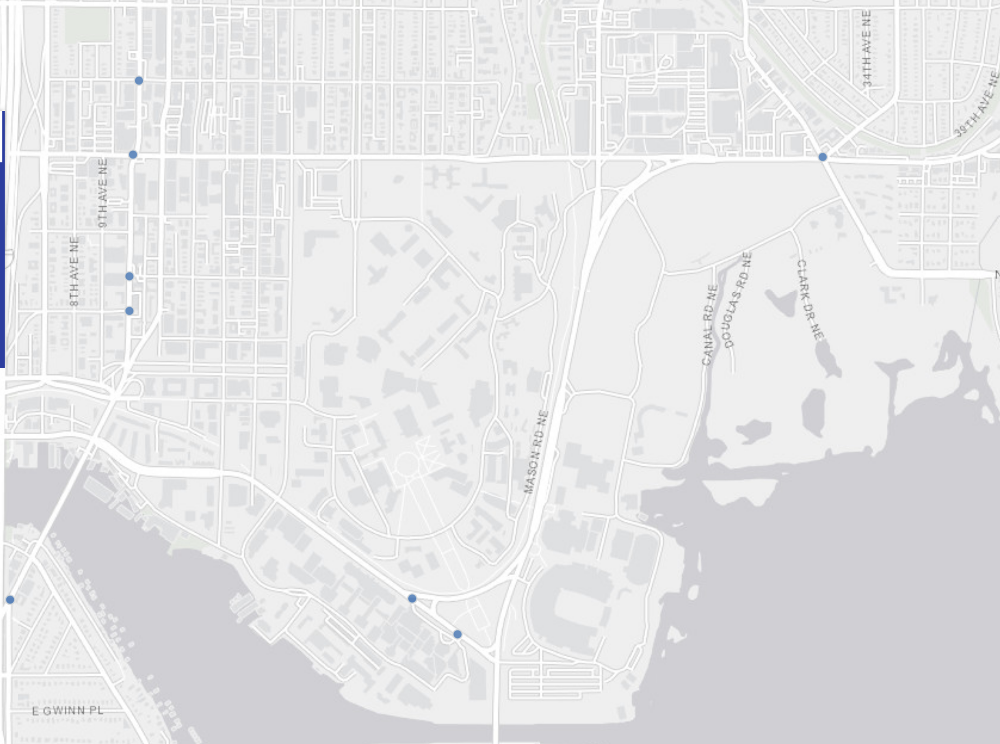

Accessible Pedestrian Signals (APS)
The data shows the locations of existing Accessible Pedestrian Signals (APS) within the city of Seattle. APS are devices that use non-visual formats such as auditory signals or vibrational for tactile signals. These non-visual formats **efficently communicate** the information of when it is safe to walk or not at intersections. The aim is to provide these features to support pedestrians who are blind or have low vision.The University of Washington brings in many people for educational or work purposes. It is important that UW accommodates every student's needs to ensure their **safety** from point A to B. There are some APS locations around UW and here is where they are located:
